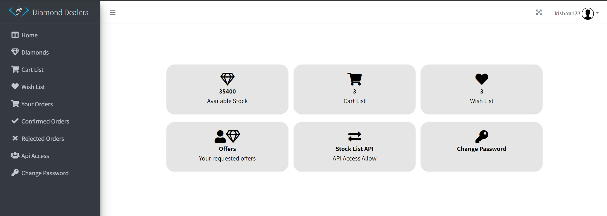
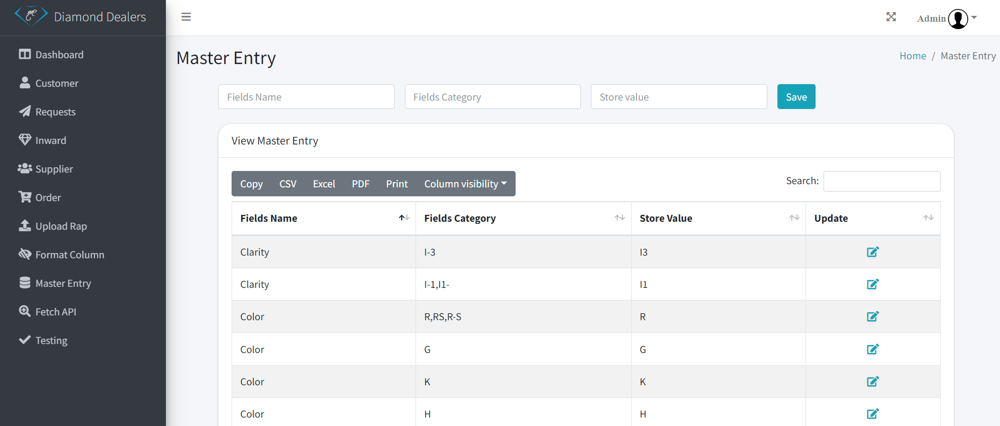
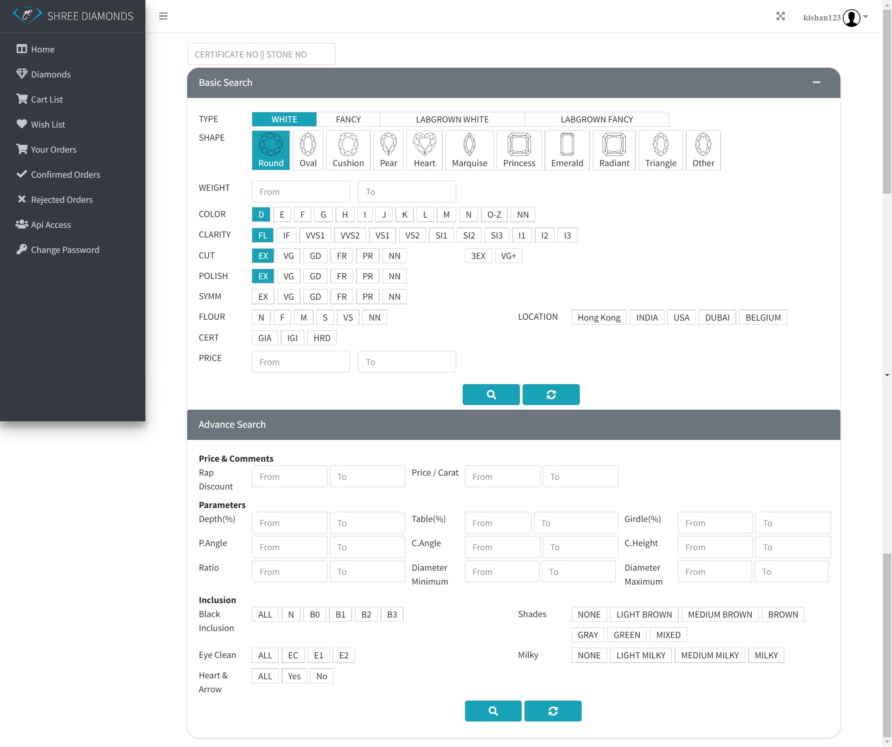
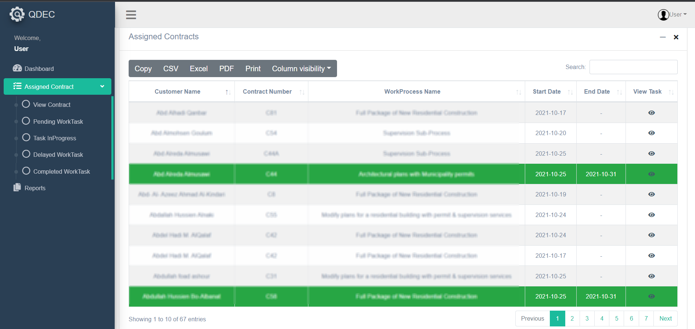
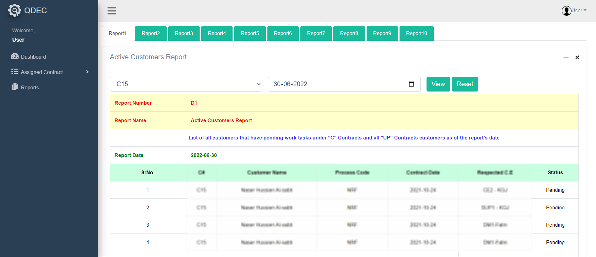
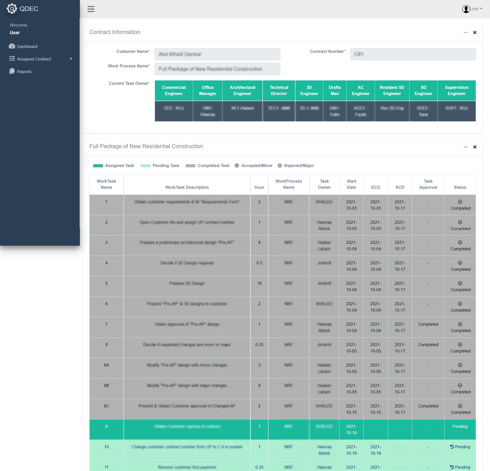

Project : Diamond Dealers
Technologies Used
| Front-End | ReactJS, CSS, Bootstrap |
|---|---|
| Back-End | Node-Express, MongoDB |
- This project has been built using Nodejs, Reactjs , Mongodb and Expressjs.
- The main purpose of this system is to maintain stones, suppliers, Customer’s data digitally so that there won’t be any clumsiness in maintaining information.
- Earlier, Client used to face so many problems and one of them was, his system used to work slow and whenever he used to import even 4000 or 5000 data bulk using csv/excel connection got lost because it used to take a lot of time to import those data and that problem has been solved with this system.
- While importing csv/excel there are calculations done like calculating rapnet data, applying formulas selected by admin, changing column values with the master entry values.
- Supplier wise mapping facility is there like whenever client adds any supplier at that time, he decides that which column of that particular csv/excel goes with which column of given dropdown for that particular supplier.
- There is search filter given to each customer through which they can find the stones easily.
- There is server-side pagination done so that it takes only second to get thousands of data from database

.png)


Project : Quantum Design
Technologies Used
| Front-End | ReactJS, CSS, Bootstrap |
|---|---|
| Back-End | PHP, MYSQL |
- Quantum Design Engineering Consultancy is a small engineering company specialized in developing architectural and structural designs and drawings for residential, commercial, and industrial buildings.
- They used to manage tasks manually and eventually they found it difficult as there are so many work processes and each work process includes number of sub tasks so they wanted to make it to manage easily.
- This project has been built using Reactjs, PHP APIs and MySQL.
- The main purpose of this system is to maintain customer detail, staff detail, contract detail and task allocation detail.
- In this system customer can apply for the contract and those contracts eventually assigned to the staff members.
- Staff members can mark each task as Pending, In Progress or Completed. Delayed status is managed by the system with some written logic.
- There are several reports generated which helps admin in making some future conclusions.



...